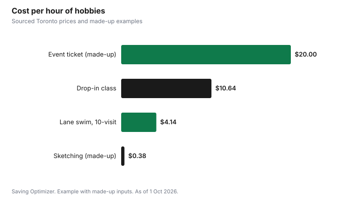

Entertainment · Canada
Cheap Hobbies for Adults in Canada: Start-Up and Monthly Costs
The cheapest hobbies use what you already own or what your city and library give you for free. With a library card you can take online courses and learn a language at no cost; Toronto Public Library cardholders get LinkedIn Learning and interactive language courses in 71 languages. City recreation centres offer lane swims and drop-in classes for a few dollars, and some for free. Walking, running, sketching, cooking and board games need little or no gear. Whatever you choose, try it for a month with borrowed or free resources before you buy equipment, and compare hobbies by cost per hour, not just start-up cost.
Key takeaways
- Try a hobby for a month before buying gear.
- Library cards unlock free courses and language learning in many cities.
- Toronto: 10-visit adult lane swim pass $41.38; drop-in fitness class $10.64; free skating.
- Toronto's free recreation centres charge nothing for lane swims and drop-in classes.
- Compare hobbies by cost per hour, not just start-up cost.
- Example with made-up inputs: three hobbies for $28 a month.
Free with a library card
Your library card is the best-value hobby tool in Canada. Toronto Public Library says its card gives free access to online services for work, leisure or personal growth, including LinkedIn Learning's thousands of courses, interactive courses in 71 languages, and video courses on photography, design and more. Calgary Public Library says its membership is always free to residents of Calgary and surrounding Indigenous communities, and its LinkedIn Learning access uses your card number and PIN. Check what your own library offers; most also lend books, audiobooks and magazines on hobbies.
| Library | What it offers | Cost |
|---|---|---|
| Toronto Public Library | LinkedIn Learning; language courses in 71 languages; video courses on photography, design and more | Free with a card |
| Calgary Public Library | LinkedIn Learning; programs and courses | Free membership for Calgary residents |
| Vancouver Public Library | LinkedIn Learning, with some courses in several languages | Included with a VPL card |
City recreation for a few dollars
City recreation departments run low-cost activities. In Toronto, a 10-visit adult lane swim pass is $41.38, a single drop-in group fitness or aquatic fitness class is $10.64, and drop-in skating is free. At Toronto's designated free centres, lane swims, drop-in group fitness classes, cardio rooms and weight rooms cost nothing. Older adults 60 and over pay about half. Space in drop-in programs is not guaranteed, so arrive early.
| Activity | Price | Per visit |
|---|---|---|
| 10-visit lane swim | $41.38 | About $4.14 |
| Single drop-in fitness class (yoga, Pilates, cardio and more) | $10.64 | $10.64 |
| 10-visit aquatic fitness | $125.10 | About $12.51 |
| Drop-in skating | Free | $0 |
| Free centres: lane swim and drop-in classes | Free | $0 |
Low-cost hobbies compared
These hobbies need little to start. The cost columns describe what drives the cost rather than a price, because gear prices vary widely.
| Hobby | Start-up | Ongoing | Notes |
|---|---|---|---|
| Walking, hiking and running | Comfortable shoes | Almost nothing | Free trails and parks |
| Sketching or drawing | Pencils and a sketchbook | Paper | Library books and free video lessons |
| Learning a language | Nothing with a library card | Nothing | Library language courses |
| Cooking or baking | Kitchen basics you own | Ingredients you would buy anyway | Cook-and-share with friends |
| Board and card games | One game, or borrow | Nothing | Game nights rotate hosts |
| Photography | Your phone | Nothing | Free editing apps |
| Swimming | Swimsuit and goggles | Pool passes | City lane swims |
| Volunteering | Nothing | Transit | Builds skills and community |
Cost per hour
A hobby that costs more to start can still be cheap if you do it often. Divide total cost over a year by hours spent. A $40 sketchbook-and-pencils kit used two hours a week is about 38 cents an hour over a year. A $41.38 swim pass used for ten one-hour swims is about $4.14 an hour. Compare that with a single $60 event ticket for a three-hour evening, $20 an hour. Cost per hour helps you choose hobbies you will actually do, not just ones that look cheap.
| Hobby | Cost | Hours | Cost per hour |
|---|---|---|---|
| Sketching kit (made-up price) | $40 for a year | 104 | About $0.38 |
| Toronto 10-visit lane swim | $41.38 | 10 | About $4.14 |
| Drop-in class, Toronto | $10.64 | 1 | $10.64 |
| One event ticket (made-up price) | $60 | 3 | $20 |
Hobbies that save money elsewhere
Some hobbies pay part of their way. Cooking and baking can replace takeout. Sewing and mending extend the life of clothes. Gardening on a balcony can supply herbs. Fixing bikes or small appliances saves repair bills. None of these needs to be a money-maker; the point is that the time you enjoy also lowers another line in your budget. When you compare hobbies, count that saving alongside the cost.
Social hobbies have another advantage: they replace paid outings with friends. A rotating game night, a walking group or a cook-and-share dinner gives you the same time together as a restaurant or a show at a fraction of the cost.
Try before you buy
- Borrow a book or take a free library course on the hobby.
- Do a drop-in session or a free trial class before signing up for a series.
- Borrow gear from a friend for the first month.
- If you stick with it, buy used gear first.
- Upgrade only the one item that limits you most.
- Sell gear you no longer use.
Example with made-up inputs: three hobbies
These numbers are an example with made-up inputs, except the city pass price. Someone picks three hobbies. Language learning through the library costs $0. Lane swimming once a week with a 10-visit pass costs $41.38 every ten weeks, about $18 a month. Sketching costs $40 up front for a kit and then about $3 a month in paper; over a year, that averages about $6 a month. Monthly board game nights with friends cost nothing beyond snacks, about $4 a month as their share. Total: about $28 a month for four or five hours of hobbies a week.
| Hobby | Monthly cost |
|---|---|
| Language learning (library) | $0 |
| Lane swimming (10-visit pass) | About $18 |
| Sketching (kit spread over a year, plus paper) | About $6 |
| Board game nights (snacks) | About $4 |
| Total | About $28 |

For date ideas that use the same resources, see date night ideas on a budget. For free online learning, see free online courses through your library.
Sources
- Toronto Public Library, eLearning and LinkedIn Learning, tpl.ca, as of 1 Oct 2026.
- Calgary Public Library, Join and LinkedIn Learning for Library, calgarylibrary.ca, as of 1 Oct 2026.
- Vancouver Public Library, LinkedIn Learning, vpl.ca, as of 1 Oct 2026.
- City of Toronto, Fitness: memberships and drop-in passes, toronto.ca, as of 1 Oct 2026. Lane swim, drop-in class and aquatic fitness prices; free centres; older adult rates; space not guaranteed.
- City of Toronto, Drop-in Skating, toronto.ca, as of 1 Oct 2026.
- Sketching, ticket and snack amounts in the examples are an example with made-up inputs.
Frequently asked questions
What are cheap hobbies for adults in Canada?
Walking and running, sketching, cooking, board games, photography with your phone, volunteering, language learning through the library and city lane swims or drop-in classes.
Can I learn a language for free in Canada?
Many libraries offer free language courses. Toronto Public Library cardholders get interactive courses in 71 languages.
How much is lane swimming in Toronto?
A 10-visit adult lane swim pass is $41.38 before tax, as of 1 Oct 2026, and lane swims are free at Toronto's designated free centres.
How do I avoid spending too much on a new hobby?
Try it for a month with borrowed or free resources, then buy used gear and upgrade only what limits you most.
What is cost per hour?
The total yearly cost of a hobby divided by the hours you spend on it. It shows that a hobby you do often can be cheaper than one with a low start-up cost.
Are library cards free?
For residents in most cities. Calgary Public Library says membership is always free to Calgary residents and surrounding Indigenous communities.
Researched and drafted with AI assistance and fact-checked against official Canadian sources. How we create content.
Disclosure: Saving Optimizer may earn a commission if a partner link is added later, such as a hobby supply offer type. No partnership is claimed on this page. Education only.